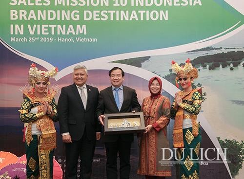

KERJASAMA INTERNASIONAL: INDONESIA X VIETNAM
🌻🛺Bidang Pariwisata🎡🪁
- Indonesia dan Vietnam telah menjalin kerja sama yang erat di bidang pariwisata untuk meningkatkan kunjungan wisatawan antar kedua negara. Salah satu langkah yang dilakukan adalah dengan mempromosikan destinasi wisata unggulan melalui pameran dan kampanye pariwisata. Misalnya, Indonesia aktif memperkenalkan keindahan Bali, Yogyakarta, dan Raja Ampat kepada masyarakat Vietnam, sedangkan Vietnam mempromosikan destinasi seperti Halong Bay, Sa Pa, dan Kota Tua Hoi An kepada masyarakat Indonesia. Melalui promosi ini, kedua negara berharap dapat menarik lebih banyak wisatawan dan mempererat hubungan antara masyarakatnya.
- Selain promosi, Indonesia dan Vietnam juga mendukung kerja sama antara industri pariwisata, seperti agen perjalanan, hotel, dan maskapai penerbangan. Dengan adanya paket wisata khusus yang dirancang untuk wisatawan kedua negara, perjalanan menjadi lebih mudah dan menarik. Contohnya, wisatawan Vietnam dapat menikmati paket tur budaya dan kuliner di Yogyakarta, sementara wisatawan Indonesia bisa merasakan pengalaman unik mengarungi sungai-sungai di Halong Bay menggunakan perahu tradisional. Program ini tidak hanya meningkatkan jumlah kunjungan wisatawan, tetapi juga membantu perekonomian lokal.
- Kerja sama pariwisata ini membawa banyak manfaat, baik bagi masyarakat maupun pemerintah kedua negara. Selain meningkatkan pendapatan sektor pariwisata, program ini juga memperkuat hubungan budaya antara Indonesia dan Vietnam. Dengan saling mengenal budaya melalui pariwisata, masyarakat kedua negara dapat belajar untuk saling menghormati dan menghargai. Ke depannya, kerja sama ini diharapkan terus berkembang, sehingga semakin banyak orang yang dapat menikmati keindahan dan kekayaan budaya Indonesia dan Vietnam.
